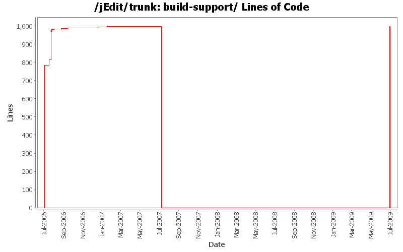

[root]/build-support

| Author | Changes | Lines of Code | Lines per Change |
|---|---|---|---|
| Totals | 35 (100.0%) | 2029 (100.0%) | 57.9 |
| ezust | 24 (68.6%) | 1199 (59.1%) | 49.9 |
| Vampire0 | 9 (25.7%) | 817 (40.3%) | 90.7 |
| daleanson | 2 (5.7%) | 13 (0.6%) | 6.5 |
Moving back where it was...
0 lines of code changed in 4 files:
Moving build-support into main jEdit source tree.
Now we won't have to check it out separately. The plugins
under jars/ depend on it anyway, so we need it to be here now.
999 lines of code changed in 4 files:
moving build-support to the top of the SVN hierarchy
0 lines of code changed in 4 files:
[ 1748509 ] Persistent Plugin Install Lists
1 lines of code changed in 1 file:
new method SearchAndReplace.replaceAll(View,boolean), some JavaDoc fixes, bugfixes and improvements to ExtendedGridLayout, Fixed that files were shown in VFSBrowser in choose directory mode, fixed my name in about dialog
2 lines of code changed in 1 file:
Added "Vars" to debuglevel.
1 lines of code changed in 1 file:
3 lines of code changed in 1 file:
GUIUtilities has a new method makeCompactGrid() to help building nice GUIs with SpringLayout.
7 lines of code changed in 2 files:
apparently, I can't type...
1 lines of code changed in 1 file:
fix for recursive creation of directory structure in build/extras.
12 lines of code changed in 1 file:
1 lines of code changed in 1 file:
Added a message when docbook.catalog is not set
9 lines of code changed in 2 files:
commented out the newly added properties from the properties.sample
3 lines of code changed in 1 file:
*** empty log message ***
12 lines of code changed in 1 file:
Added generate toc code from jedit's stylesheet.
155 lines of code changed in 1 file:
Changed the way the docs are xslt-processed because of bugs in xsltproc for windows and spaces in filenames
23 lines of code changed in 1 file:
added a dependency of javadoc for upload.docs...
1 lines of code changed in 1 file:
Added a docs.upload task for uploading documentation to plugins.jedit.org
11 lines of code changed in 1 file:
Moved some properties from build.properties to build.xml for default plugins
3 lines of code changed in 1 file:
*** empty log message ***
1 lines of code changed in 1 file:
*** empty log message ***
5 lines of code changed in 1 file:
- Great rewrite of build.xml with many additions like automated building of various distribution files
- moved build-support to core
- made the standard plugins use build-support
779 lines of code changed in 3 files: